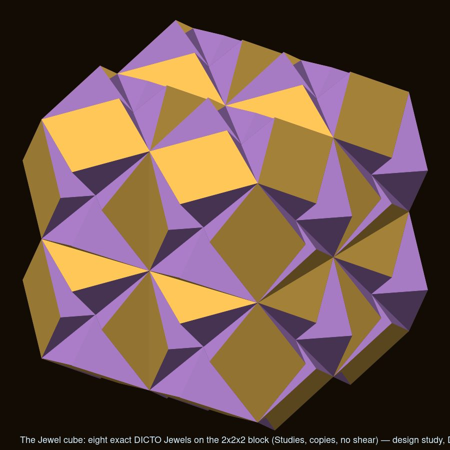
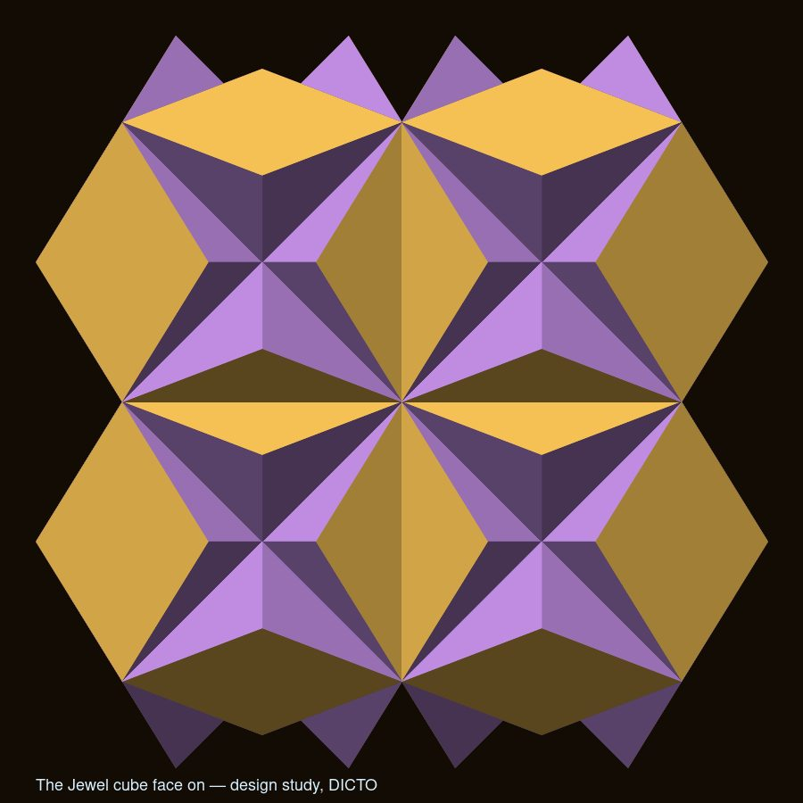
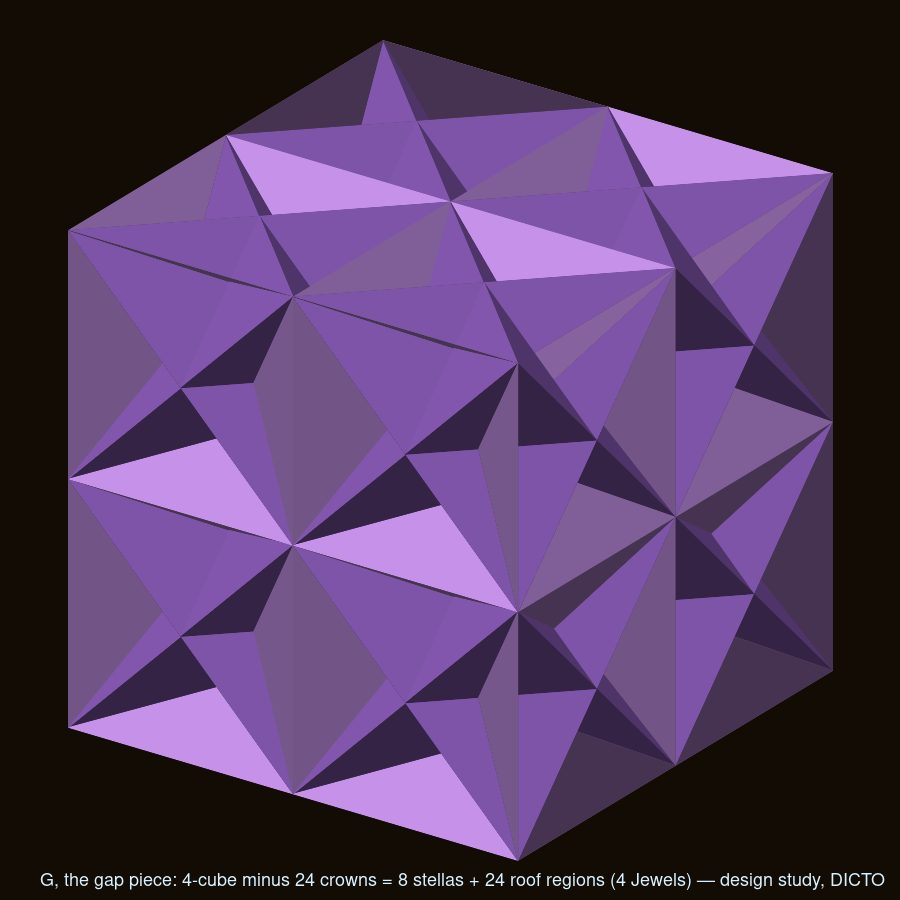
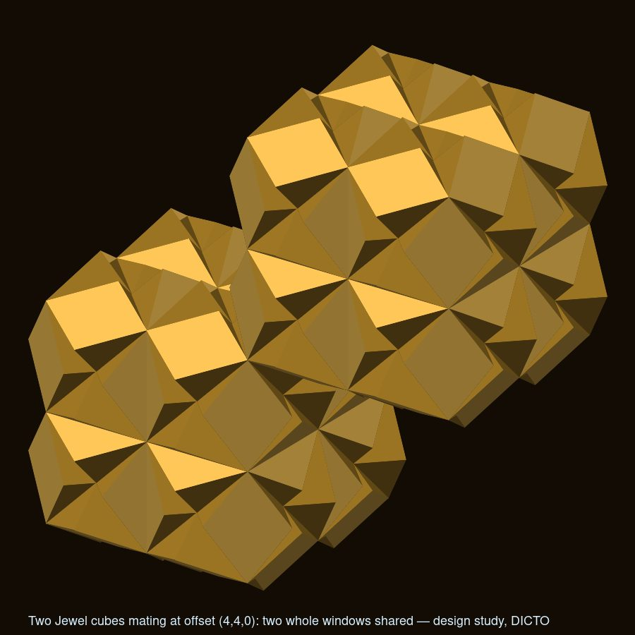
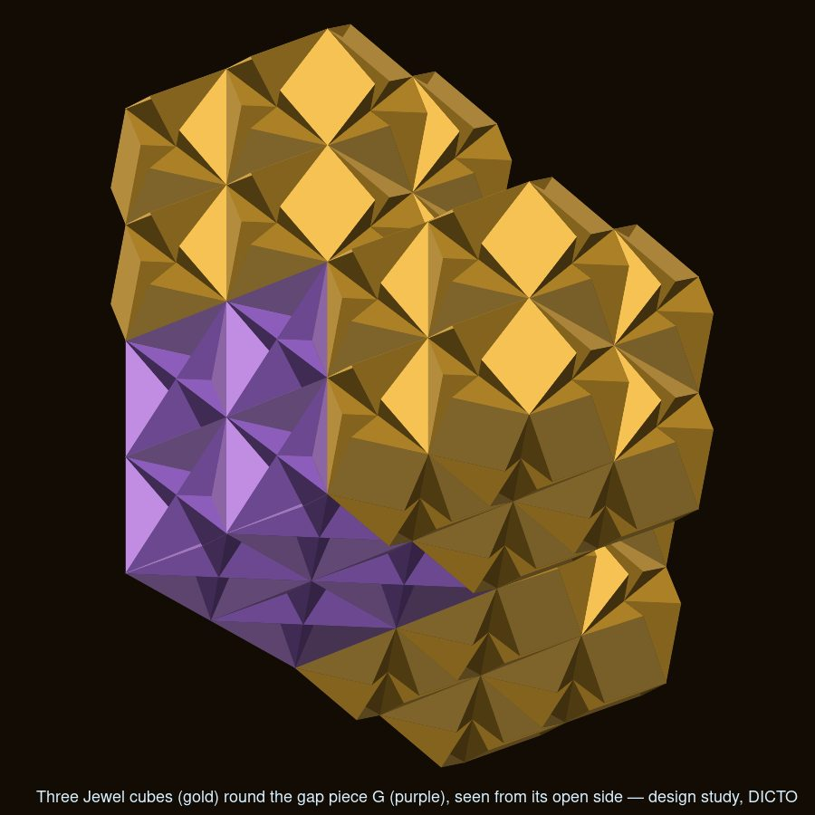
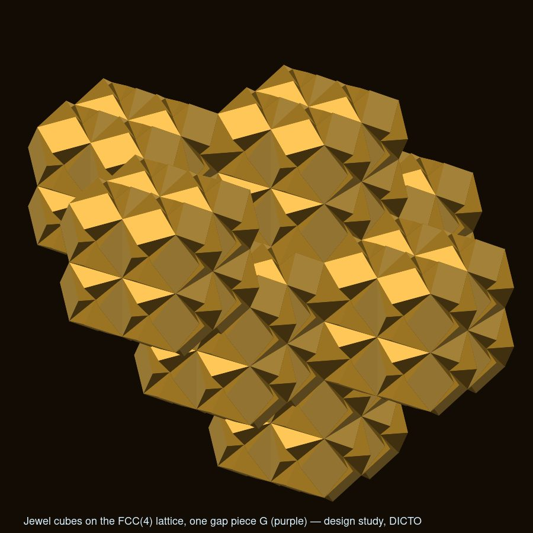
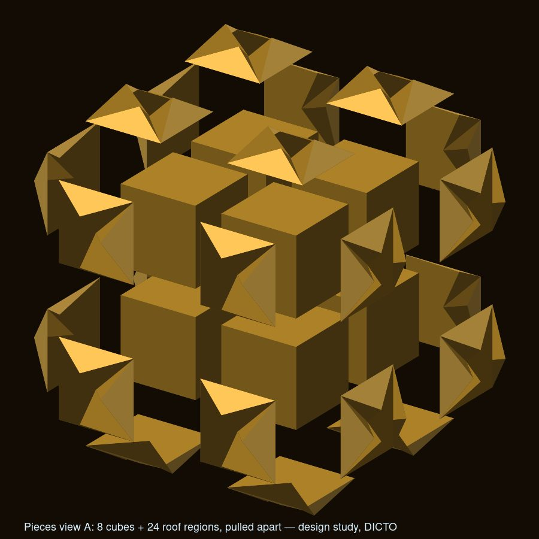
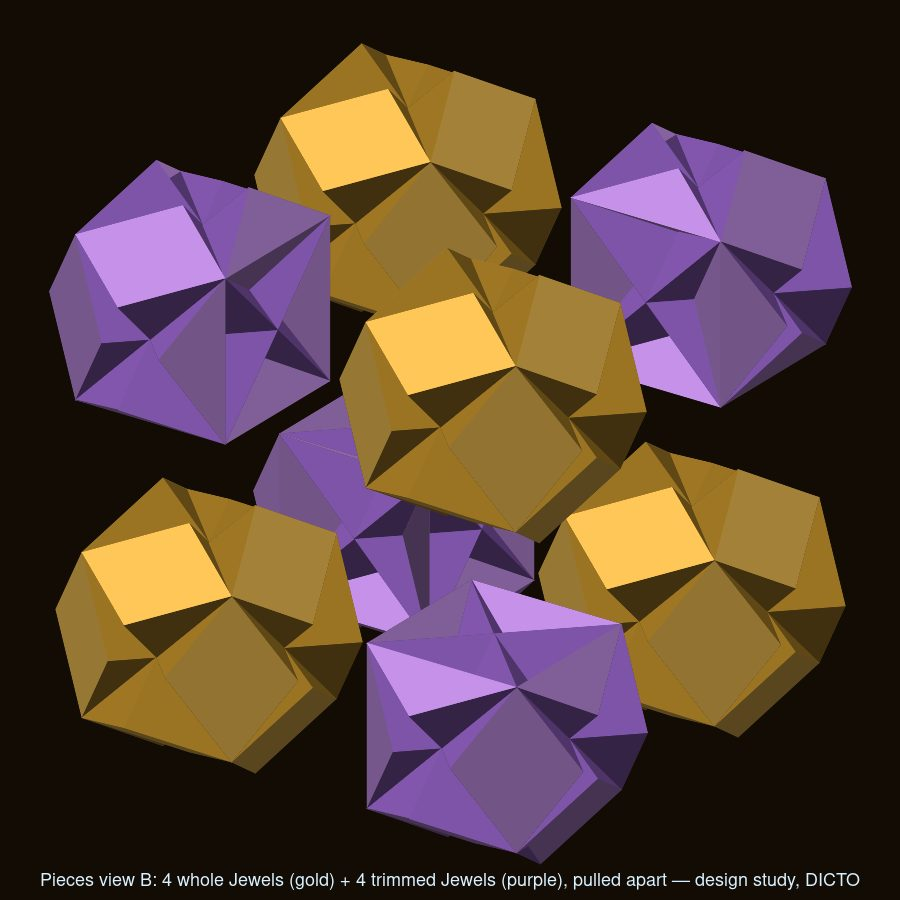
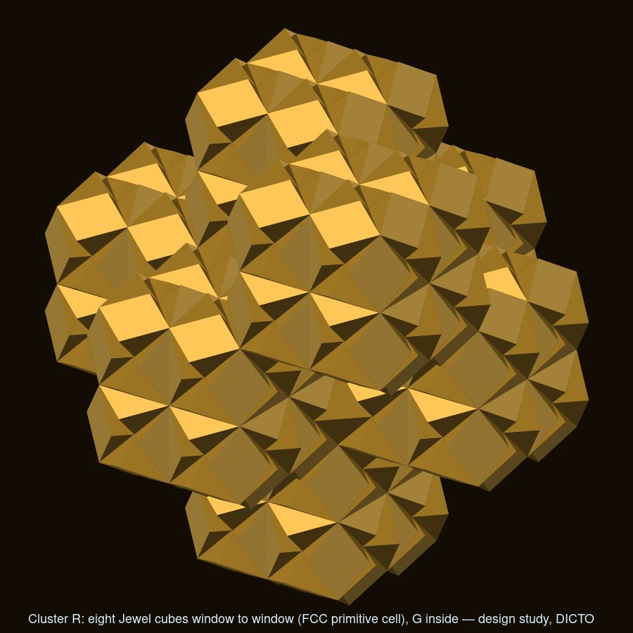

A cube of 8 DICTO Hexa Jewels (DICTO Jewels passing through each other), its partner the Hexa-Key, and their 5 : 3 checkerboard filling of space
DICTO saw the cube in Kaleidohedra's Studies world (Windows, shear as copies), "beautiful and solid, like carved out of wood", about eight Jewels in volume.
The DICTO Jewel (from the EKP windows): take the EKP cell's regular dodecahedron (Euclid's roofs on a cube of edge 2) and carve away the stella octangulas of its six face-neighbour cells. The solid keeps the whole cube and 2/3 of each of its six roofs (volume exactly 12) and its surface keeps 12 rhombi of Penrose's thick 72°/108° shape, one on each cube edge (the windows), walled by 48 triangles in the stellas' planes. Jewels on the even cells and stella octangulas (volume 4) on the odd cells fill space: the Stella–Jewel Lattice, 3 : 1 by volume.



Eight exact Jewels on a 2 × 2 × 2 block of cells overlap inside (by 16 in total); as one solid they make a cube of edge 4 with 24 outward roofs on its faces, volume 64 + 24 × 2/3 = 80, or 6⅔ Jewels. Inside, two of the tetrahedral Jewel clusters interpenetrate. No shear makes eight exact Jewels meet face to face as a cube: the lattice shear is symmetric, and no symmetric map takes the cube's edges to the Jewels' contact directions (even two of the three fail). Shearing the Jewels themselves (a three-fold squash) loses the 72° windows, and was not kept.
Hexas mate only window to window, two whole windows per neighbour. At the FCC pattern of spacing 4, each Hexa has 12 neighbours and shares 24 whole windows, and the gap between them is a single solid: 8 stella octangulas and 12 double roofs, volume 48 (4 Jewels), the DICTO Hexa-Key. Hexas and Hexa-Keys then fill space like a checkerboard, 5 : 3 by volume, just as Jewels and stellas do one level down (3 : 1). The Hexa is 8 cubes with 24 outward roofs; the Hexa-Key is 8 stellas with the same 24 roofs turned inward.



The Hexa splits without overlap into 8 cubes and 24 roofs (split A), or into 4 whole Jewels and 4 trimmed Jewels (split B; a trimmed Jewel has 3 roofs removed, leaving 3 dents, and its volume is exactly one cube, 8). The Hexa-Key splits into 8 stellas and 24 roofs. Every part matches its neighbours face to face.



Clusters of eight Hexas: rhombohedral (window to window, 36 whole windows shared, a Hexa-Key sealed inside, volume 688 = 57⅓ Jewels: the Jewel rhombohedron of the Kagome hulls one level up) and diamond (Hexas sharing 7 corner Jewels, volume 556). Kagome style: every Jewel in exactly two Hexas is impossible, since corner neighbours force overlapping blocks; the best is the diamond network, each Hexa sharing 4 of its 8 corner Hexa Jewels with 4 neighbours, with stella octangulas filling every cell between them exactly, so Hexas and stellas fill space with no single Jewels. Nothing turns: no join in these packings can be turned by its face's symmetry and still fit; turns exist only for a piece hanging on one neighbour (on a window: 180° and one flip).
Known and credited: the space filling by stella octangulas and octahedra; the cube, octahedron and stella octangula inscribed in the rhombic dodecahedron; the FCC primitive cell as a cube squashed along a diagonal. The window rhombus is one of the ten pieces of Lalvani's building system (US 4,723,382, 1988), but the Jewel is not: its 48 walls lie in the stellas' planes along the cube's face diagonals, 22.24° off every icosahedral two-fold axis, and the patent has no stella octangula, carving or cube–dodecahedron construction. Not found (web search, 2026-10-09): a cube built from carved dodecahedra, or this block of eight. The Hexa, the Hexa-Key, their 5 : 3 filling and the clusters rest on the DICTO Jewel, which itself was not found. This is not proof of novelty, and this record makes no claim of priority.
Included: data/, each solid with vertices, faces, face tags, pieces (each closed, with its volume) and checks, at cube edge 2 per cell (-raw) and with the Hexa's inner cube at edge 1 (-unit): the Hexa (unified, as Jewels, splits A and B), the Hexa-Key (unified, pieces), and both clusters (unified, as Hexas, as Jewels); data/checks-hexa.txt (16 checks from krp-core v0.14.0: closed and outward surfaces; exact volumes, Hexa 80, Hexa-Key 48, clusters 688 and 556, trimmed Jewel 8, roof 2/3; 24 whole Jewel windows and stella-matching walls on the Hexa; every parts view adding up). The network, packing and turning results come from the design study (overlap by sampling, exact contact areas, the mating scan and the turning table). The family can be built in Polyhedraverse (https://polyhedraverse.dictospheres.com, DICTO's pieces) and seen in Kaleidohedra's Stella–Jewel world, part of DICTO's open-source apps (concept DOI 10.5281/zenodo.23173809; previously archived there as version 10.5281/zenodo.23262227).